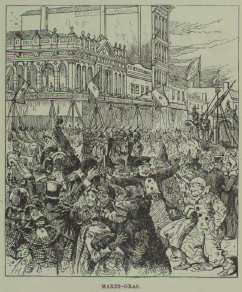

"Great Scott!"[Behind MT's desire to re- or un-write Malory lay his longstanding quarrel with Walter Scott's historical romances. There's only one reference to Scott's novels in Connecticut Yankee -- when Hank disparagingly notes the difference between the eloquent language Sir Walter puts into the mouths of characters like Ivanhoe and Rebecca and the dirty words Hank hears around the Round Table. But by making Hank's own favorite expletive "Great Scott," MT makes sure his readers are continually reminded of Scott's idealizations of the Middle Ages throughout his own "realistic" attempt to show the same past as it actually was. To MT, Scott's fiction epitomized the falsehoods that the Realist writer had to correct. In the following two chapters from Life on the Mississippi (1882), he indicates how much influence he believes "a single book" could exert on a culture, blaming Scott's Ivanhoe for not only "re-enslaving" the minds that had been set free by the French Revolution and Napoleon, but also for causing the Civil War. In these passages, MT diagnoses the symptoms of what he calls "the Sir Walter disease" -- the influence that Scott's romances had, and are still having, on the mind of the South -- and suggests how much his book about 6th century England is in fact "about" 19th century America. [The illustrations below are from the first edition of Life on the Mississippi. To see a photograph of the Capital Building MT refers to, CLICK HERE.] |
|
Castles and Culture Baton Rouge was clothed in flowers, like a bride--no, much more so; like a greenhouse. For we were in the absolute South now--no modifications, no compromises, no half-way measures. The magnolia-trees in the Capitol grounds were lovely and fragrant, with their dense rich foliage and huge snow-ball blossoms. The scent of the flower is very sweet, but you want distance on it, because it is so powerful. They are not good bedroom blossoms--they might suffocate one in his sleep. We were certainly in the South at last; for here the sugar region begins, and the plantations--vast green levels, with sugar-mill and negro quarters clustered together in the middle distance--were in view. And there was a tropical sun overhead and a tropical swelter in the air. And at this point, also, begins the pilot's paradise: a wide river hence to New Orleans, abundance of water from shore to shore, and no bars, snags, sawyers, or wrecks in his road. Sir Walter Scott is probably responsible for the Capitol building; for it is not conceivable that this little sham castle would ever have been built if he had not run the people mad, a couple of generations ago, with his mediaeval romances. The South has not yet recovered from the debilitating influence of his books. Admiration of his fantastic heroes and their grotesque "chivalry" doings and romantic juvenilities still survives here, in an atmosphere in which is already perceptible the wholesome and practical nineteenth-century smell of cotton-factories and locomotives; and traces of its inflated language and other windy humbuggeries survive along with it. It is pathetic enough, that a white-washed castle, with turrets and things--materials all ungenuine within and without, pretending to be what they are not--should ever have been built in this otherwise honorable place; but it is much more pathetic to see this architectural falsehood undergoing restoration and perpetuation in our day, when it would have been so easy to let dynamite finish what a charitable fire began, and then devote this restoration-money to the building of something genuine. Baton Rouge has no patent on imitation castles, however, and no monopoly of them. Here is a picture from the advertisement of the "Female Institute" of Columbia, Tennessee. The following remark is from the same advertisement-- 'The Institute building has long been famed as a model of striking and beautiful architecture. Visitors are charmed with its resemblance to the old castles of song and story, with its towers, turreted walls, and ivy-mantled porches.' Keeping school in a castle is a romantic thing; as romantic as keeping hotel in a castle. By itself the imitation castle is doubtless harmless, and well enough; but as a symbol and breeder and sustainer of maudlin Middle-Age romanticism here in the midst of the plainest and sturdiest and infinitely greatest and worthiest of all the centuries the world has seen, it is necessarily a hurtful thing and a mistake. Here is an extract from the prospectus of a Kentucky "Female College." Female college sounds well enough; but since the phrasing it in that unjustifiable way was done purely in the interest of brevity, it seems to me that she-college would have been still better--because shorter, and means the same thing: that is, if either phrase means anything at all-- "The president is southern by birth, by rearing, by education, and by sentiment; the teachers are all southern in sentiment, and with the exception of those born in Europe were born and raised in the south. Believing the southern to be the highest type of civilization this continent has seen, ¹ the young ladies are trained according to the southern ideas of delicacy, refinement, womanhood, religion, and propriety; hence we offer a first-class female college for the south and solicit southern patronage." What, warder, ho! the man that can blow so complacent a blast as that, probably blows it from a castle. ¹ Illustrations of it thoughtlessly omitted by the advertiser: KNOXVILLE, Tenn., October 19.--This morning a few minutes after ten o'clock, General Joseph A. Mabry, Thomas O'Connor, and Joseph A. Mabry, Jr., were killed in a shooting affray. The difficulty began yesterday afternoon by General Mabry attacking Major O'Connor and threatening to kill him. This was at the fair grounds, and O'Connor told Mabry that it was not the place to settle their difficulties. Mabry then told O'Connor he should not live. It seems that Mabry was armed and O'Connor was not. The cause of the difficulty was an old feud about the transfer of some property from Mabry to O'Connor. Later in the afternoon Mabry sent word to O'Connor that he would kill him on sight. This morning Major O'Connor was standing in the door of the Mechanics' National Bank, of which he was president. General Mabry and another gentleman walked down Gay Street on the opposite side from the bank. O'Connor stepped into the bank, got a shot gun, took deliberate aim at General Mabry and fired. Mabry fell dead, being shot in the left side. As he fell O'Connor fired again, the shot taking effect in Mabry's thigh. O'Connor then reached into the bank and got another shot gun. About this time Joseph A. Mabry, Jr., son of General Mabry, came rushing down the street, unseen by O'Connor until within forty feet, when the young man fired a pistol, the shot taking effect in O'Connor's right breast, passing through the body near the heart. The instant Mabry shot, O'Connor turned and fired, the load taking effect in young Mabry's right breast and side. Mabry fell pierced with twenty buckshot, and almost instantly O'Connor fell dead without a struggle. Mabry tried to rise, but fell back dead. The whole tragedy occurred within two minutes, and neither of the three spoke after he was shot. General Mabry had about thirty buckshot in his body. A bystander was painfully wounded in the thigh with a buckshot, and another was wounded in the arm. Four other men had their clothing pierced by buckshot. The affair caused great excitement, and Gay Street was thronged with thousands of people. General Mabry and his son Joe were acquitted only a few days ago of the murder of Moses Lusby and Don Lusby, father and son, whom they killed a few weeks ago. Will Mabry was killed by Don Lusby last Christmas. Major Thomas O'Connor was President of the Mechanics' National Bank here, and was the wealthiest man in the State.--Associated Press Telegram. One day last month, Professor Sharpe, of the Somerville, Tenn., Female College, "a quiet and gentlemanly man," was told that his brother-in-law, a Captain Burton, had threatened to kill him. Burton, it seems, had already killed one man and driven his knife into another. The Professor armed himself with a double-barrelled shot gun, started out in search of the brother-in-law, found him playing billiards in a saloon, and blew his brains out. The "Memphis Avalanche" reports that the Professor's course met with pretty general approval in the community; knowing that the law was powerless, in the actual condition of public sentiment, to protect him, he protected himself. About the same time, two young men in North Carolina quarrelled about a girl, and "hostile messages" were exchanged. Friends tried to reconcile them, but had their labour for their pains. On the 24th the young men met in the public highway. One of them had a heavy club in his hand, the other an axe. The man with the club fought desperately for his life, but it was a hopeless fight from the first. A well-directed blow sent his club whirling out of his grasp, and the next moment he was a dead man. About the same time, two "highly connected" young Virginians, clerks in a hardware store at Charlottesville, while "skylarking," came to blows. Peter Dick threw pepper in Charles Roads's eyes; Roads demanded an apology; Dick refused to give it, and it was agreed that a duel was inevitable, but a difficulty arose; the parties had no pistols, and it was too late at night to procure them. One of them suggested that butcher-knives would answer the purpose, and the other accepted the suggestion; the result was that Roads fell to the floor with a gash in his abdomen that may or may not prove fatal. If Dick has been arrested, the news has not reached us. He "expressed deep regret," and we are told by a Staunton correspondent of the Philadelphia Press that "every effort has been made to hush the matter up."--Extracts from the Public Journals. Enchantments and Enchanters  The largest annual event in New Orleans is a something which we arrived too late to sample: the Mardi-Gras festivities. I saw the procession of the Mystic Crew of Comus there, twenty-four years ago--with knights and nobles and so on, clothed in silken and golden Paris-made gorgeousnesses, planned and bought for that single night's use; and in their train all manner of giants, dwarfs, monstrosities, and other diverting grotesquerie--a startling and wonderful sort of show, as it filed solemnly and silently down the street in the light of its smoking and flickering torches; but it is said that is these latter days the spectacle is mightily augmented, as to cost, splendor, and variety. There is a chief personage--'Rex;' and if I remember rightly, neither this king nor any of his great following of subordinates is known to any outsider. All these people are gentlemen of position and consequence; and it is a proud thing to belong to the organization; so the mystery in which they hide their personality is merely for romance's sake, and not on account of the police. Mardi-Gras is of course a relic of the French and Spanish occupation; but I judge that the religious feature has been pretty well knocked out of it now. Sir Walter has got the advantage of the gentlemen of the cowl and rosary, and he will stay. His mediaeval business, supplemented by the monsters and the oddities, and the pleasant creatures from fairy-land, is finer to look at than the poor fantastic inventions and performances of the revelling rabble of the priest's day, and serves quite as well, perhaps, to emphasize the day and admonish men that the grace-line between the worldly season and the holy one is reached. This Mardi-Gras pageant was the exclusive possession of New Orleans until recently. But now it has spread to Memphis and St. Louis and Baltimore. It has probably reached its limit. It is a thing which could hardly exist in the practical North; would certainly last but a very brief time; as brief a time as it would last in London. For the soul of it is the romantic, not the funny and the grotesque. Take away the romantic mysteries, the kings and knights and big-sounding titles, and Mardi-Gras would die, down there in the South. The very feature that keeps it alive in the South--girly-girly romance--would kill it in the North or in London. Puck and Punch, and the press universal, would fall upon it and make merciless fun of it, and its first exhibition would also be its last. Against the crimes of the French Revolution and of Bonaparte may be set two compensating benefactions: the Revolution broke the chains of the ancien régime and of the Church, and made of a nation of abject slaves a nation of freemen; and Bonaparte instituted the setting of merit above birth, and also so completely stripped the divinity from royalty, that whereas crowned heads in Europe were gods before, they are only men, since, and can never by gods again, but only figureheads, and answerable for their acts like common clay. Such benefactions as these compensate the temporary harm which Bonaparte and the Revolution did, and leave the world in debt to them for these great and permanent services to liberty, humanity, and progress. Then comes Sir Walter Scott with his enchantments, and by his single might checks this wave of progress, and even turns it back; sets the world in love with dreams and phantoms; with decayed and swinish forms of religion; with decayed and degraded systems of government; with the sillinesses and emptinesses, sham grandeurs, sham guads, and sham chivalries of a brainless and worthless long-vanished society. He did measureless harm; more real and lasting harm, perhaps, than any other individual that ever wrote. Most of the world has now outlived good part of these harms, though by no means all of them; but in our South they flourish pretty forcefully still. Not so forcefully as half a generation ago, perhaps, but still forcefully. There, the genuine and wholesome civilization of the nineteenth century is curiously confused and commingled with the Walter Scott Middle-Age sham civilization; and so you have practical, common-sense, progressive ideas, and progressive works, mixed up with the duel, the inflated speech, and the jejune romanticism of an absurd past that is dead, and out of charity ought to be buried. But for the Sir Walter disease, the character of the Southerner--or Southron, according to Sir Walter's starchier way of phrasing it--would be wholly modern, in place of modern and mediaeval mixed, and the South would be fully a generation further advanced than it is. It was Sir Walter that made every gentleman in the South a Major or a Colonel, or a General or a Judge, before the war; and it was he, also, that made these gentlemen value these bogus decorations. For it was he that created rank and caste down there, and also reverence for rank and caste, and pride and pleasure in them. Enough is laid on slavery, without fathering upon it these creations and contributions of Sir Walter. Sir Walter had so large a hand in making Southern character, as it existed before the war, that he is in great measure responsible for the war. It seems a little harsh toward a dead man to say that we never should have had any war but for Sir Walter; and yet something of a plausible argument might, perhaps, be made in support of that wild proposition. The Southerner of the American Revolution owned slaves; so did the Southerner of the Civil War: but the former resembles the latter as an Englishman resembles a Frenchman. The change of character can be traced rather more easily to Sir Walter's influence than to that of any other thing or person. One may observe, by one or two signs, how deeply that influence penetrated, and how strongly it holds. If one take up a Northern or Southern literary periodical of forty or fifty years ago, he will find it filled with wordy, windy, flowery 'eloquence,' romanticism, sentimentality--all imitated from Sir Walter, and sufficiently badly done, too--innocent travesties of his style and methods, in fact. This sort of literature being the fashion in both sections of the country, there was opportunity for the fairest competition; and as a consequence, the South was able to show as many well-known literary names, proportioned to population, as the North could. But a change has come, and there is no opportunity now for a fair competition between North and South. For the North has thrown out that old inflated style, whereas the Southern writer still clings to it--clings to it and has a restricted market for his wares, as a consequence. There is as much literary talent in the South, now, as ever there was, of course; but its work can gain but slight currency under present conditions; the authors write for the past, not the present; they use obsolete forms, and a dead language. But when a Southerner of genius writes modern English, his book goes upon crutches no longer, but upon wings; and they carry it swiftly all about America and England, and through the great English reprint publishing houses of Germany--as witness the experience of Mr. Cable and Uncle Remus, two of the very few Southern authors who do not write in the Southern style. Instead of three or four widely-known literary names, the South ought to have a dozen or two--and will have them when Sir Walter's time is out. A curious exemplification of the power of a single book for good or harm is shown in the effects wrought by "Don Quixote" and those wrought by "Ivanhoe." The first swept the world's admiration for the mediaeval chivalry-silliness out of existence; and the other restored it. As far as our South is concerned, the good work done by Cervantes is pretty nearly a dead letter, so effectually has Scott's pernicious work undermined it. |